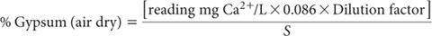
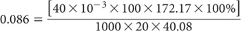

This method for gypsum in soil involves extraction with water in which gypsum is soluble to the extent of approximately 0.2 g/100 mL. This corresponds to 2% gypsum in soil following extraction at a 1:10 soil/water ratio. The maximum content of gypsum extracted at a 1:10 ratio should not exceed 1.5%, however, as the rate of dissolution of gypsum in water slows considerably near to its saturation point. Wider soil/water ratios must be employed when higher concentrations of gypsum are expected.
Following extraction, gypsum is selectively precipitated with acetone, redissolved in water, and gypsum determined by measuring Ca2+ concentration in solution (Hesse 1971).
Table 11.1. Summary details of method codes, method titles, technologies and notes on methods for gypsum in soils.
Code |
Technology |
Test method |
Notes |
11A1 |
Aqueous dissolution, selective precipitation of gypsum with acetone, redissolution in water and final measurement of Ca. |
Total gypsum. |
Most suited to soils with <2% gypsum. |
11A2 |
MIR reflectance spectroscopy indirect method. |
Total gypsum - MIR reflectance spectroscopy. |
Method is particularly suited to gypsum alone. Its applicability for estimating gypsum in soil is subject to overcoming soil matrix effects. |
Acetone
This reagent grade solvent [(CH3)2-CO] should contain no SO42–.
1 M Barium Chloride Solution
Dissolve 24.4 g BaCl2.2H2O in a graduated Erlenmeyer or other suitable flask and make to 100 mL with deionised water.
1 M Hydrochloric Acid (HCl)
Calcium Primary Standard
1.0 L contains 1000 mg Ca2+.
Suspend 2.4972 g calcium carbonate (CaCO3; previously dried at 110°C to constant weight) in some deionised water. Bring into full solution by cautiously adding a minimum (about 50 mL) of 2 M HCl to form a CaCl2 solution. Make to 1.0 L with deionised water in a volumetric flask. Alternatively dilute a standard analytical ampoule according to manufacturer’s instructions.
Calcium Secondary Standard
1.0 L contains 100 mg Ca2+.
Dilute 100 mL Ca Primary Standard to 1.0 L with deionised water using a volumetric flask.
Calcium Working Standards
Pipette 0, 5, 10, 15, 20 and 25 mL of Ca Secondary Standard into separate 100 mL volumetric flasks and make to volume with deionised water. These working standards cover the range 0–25 mg Ca2+/L.
Weigh 10.0 g air-dry soil (<0.5 mm) into a 250 mL wide-mouth plastic bottle when gypsum content is expected to be <1.5%. Add 100 mL deionised water, stopper the bottle and mechanically shake for 17 h. Centrifuge or filter the suspension to remove all particulate material from the supernatant. If >1.5% gypsum is expected, adjust soil weights and water volume as detailed in Table 11.2.
Test the clear supernatant for the presence of SO42– by transferring approximately 3 mL extract to a test tube. Add 10 drops 1.0 M HCl and ≈2 mL 1 M BaCl2. If turbidity develops, proceed with the analysis; absence of turbidity confirms gypsum is absent from the sample: see Note 1. When a positive SO42– test is obtained, pipette 20 mL clear extract into a 50 mL centrifuge tube. Add 20 mL acetone, mix thoroughly, let stand for 10 min and centrifuge until the supernatant is clear, then decant the liquid making sure no precipitate is lost.
Re-disperse the precipitate with 10 mL acetone by flowing the acetone from a pipette along the wall of the centrifuge tube. Centrifuge and decant, then dry the tube with precipitate in an oven set to ≈50°C. Add 40 mL (or a known volume) of water by pipette, stopper and shake until the precipitate of gypsum has dissolved. Measure Ca2+ by AAS or by ICPAES after diluting the solutions (e.g. 2x or 5x) so that concentrations fall within the range of the Ca Working Standards.
Table 11.2. Extracting conditions for soils with >1.5% gypsum.
Expected gypsum (%) |
Soil (g) |
Water (mL) |
Soil/water ratio |
1.5–3.0 |
5 |
100 |
1:20 |
3.0–4.5 |
5 |
150 |
1:30 |
etc. |
|
|
|

where:

S = weight (g) of air-dry soil; and
Dilution factor = dilution of final solution to bring within measuring range.
Report as gypsum (%) in oven-dry (105°C) soil. Use the air-dry moisture to oven-dry moisture ratio to make the oven-dry conversion. Refer to Method 2A1 for guidance with regard to this soil moisture calculation.
1. A qualitative indication of the presence of measurable SO42- can be obtained using portion of the 1:5 soil/water extract from Method 4A1. Test by adding a dilute solution of barium chloride, after acidifying with HCl. A white precipitate is suggestive of the presence of SO42-; no precipitate suggests little or no measurable SO42-. The HCl addition, and the corresponding possible release of CO2, avoids possible interference from carbonate ions, which could otherwise form a white precipitate of barium carbonate.